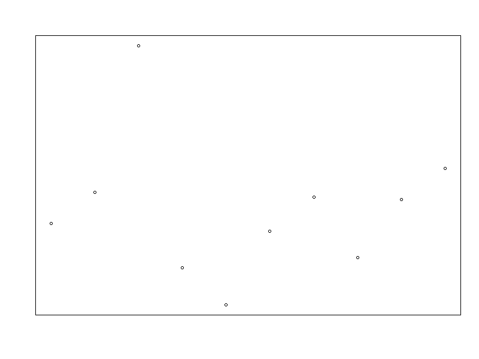

Basics of creating animated gifs with gifski package in R
1a. Convert png files to gif (from help file)
In this example, we create a series of pngs (using the png function) and save them in a temporary directory.
library(gifski)
# set up file paths to save the pngs
png_path <- file.path(tempdir(), "frame%03d.png")open the png connection and plot
png(png_path)
for(i in 1:10)
plot(rnorm(i * 10), main = "", axes = F, ylab = "", xlab = "")
dev.off()## png
## 2make vector of filenames
png_files <- sprintf(png_path, 1:10)
gif_file <- "gif_example.gif"
gifski(png_files, gif_file, delay = 0.1)
unlink(png_files) # delete files

animated gif image
The above method is useful if you’re creating a gif from a series of images that you have generated in another programme.
1b. Generate gif from series of images in a folder
2 Write direct to gif from an expression
If we are creating the ‘images’ directly from within R, then we don’t need to save the actual images, rather, we can send the expression (e.g. a plot call) straight to the save_gif function.
# Here the gif is saved into the working directory
save_gif({
for(i in 1:10) plot(rnorm(i * 10), main = "", axes =F, frame.plot=TRUE, ylab = "", xlab = "")},
gif_file <- "gif_example.gif", delay = 0.1)3. Time series of plots
3a. For example, a histogram of a poisson distribution, with increasing lambda:
save_gif(for(i in 1:15) hist(rpois(1000, i), xlab = "", main = paste("lambda =", i)),
gif_file <- "gif_poisson.gif", delay = 0.5)3b. Simulated glacier reduction
library(gifski)
# Using the volcano built in data set:
?volcano## starting httpd help server ... done# Set up break values for colour shading by altitude
brks <- seq(min(volcano), max(volcano), length.out = 20)
cols <- terrain.colors(length(brks)+1)
# Simulate glacier reduction over time
loss <- seq(145, 195, 10)
yrs <- floor(seq(1975, 2018, length.out = length(loss)))
gif.file <- "volcano_ice_loss.gif"
save_gif(
for(i in seq_along(loss)){
brks.new <- c(brks[brks < loss[i]], loss[i])
cols.new <- c(cols[brks < loss[i]], "white")
# filled.contour(volcano, col = cols, levels = brks, asp = 1)
plot(0,0, xlim = c(0,1), ylim = c(0,1), type = "n", asp = 1, axes = F, xlab = "", ylab = "")
# use .filled.contour for more control over plot
.filled.contour(z <- volcano,
x = seq(0, 1, length.out = nrow(z)),
y = seq(0, 1, length.out = ncol(z)),
col = cols.new, levels = brks.new) # , asp = 1, axes = F
contour(z, nlevels = 10, labels = "", add = T)
mtext(text = yrs[i], side = 3, line = 0, cex = 1.5)
}, gif_file = gif.file, delay = 0.5)
# shell.exec(gif.file) # run this to open your gif file